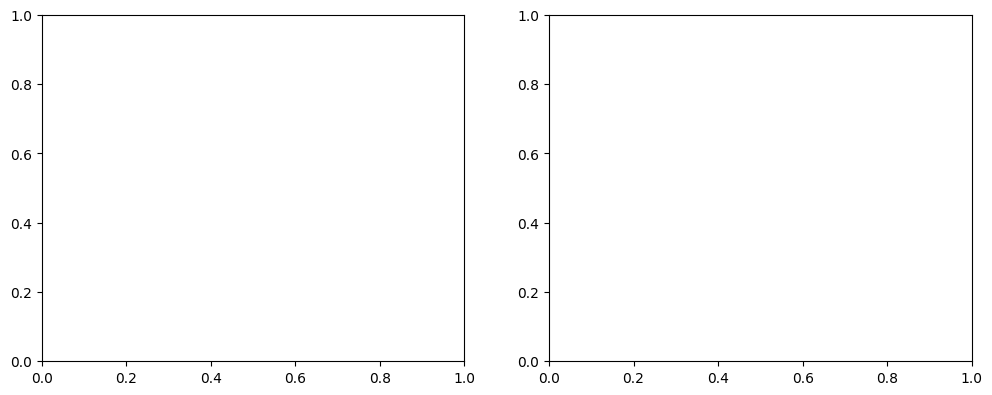

Klasifikasi Spasial Lahan Sawah dan Non-Sawah#
Bagian ini mendokumentasikan tahapan akuisisi citra satelit optik Sentinel-2A (Level-2A) dalam format GeoTIFF (.tif) melalui openEO, ekstraksi nilai spektral pada 102 titik sampel (51 sampel Sawah dan 51 sampel Non-Sawah) yang telah dilabeli melalui QGIS, hingga pemodelan klasifikasi biner (2 kelas).
Instalasi Library Yang Digunakan#
pip install geopandas
pip install openeo
pip install scikit-learn
1. Desain Pengambilan Sampel (Ground Truth)#
Pengambilan sampel dilakukan secara spasial dengan membagi objek pengamatan ke dalam dua kelas seimbang (balanced dataset) dalam format vektor (Shapefile / GeoJSON):
Kelas Target |
Kode Label |
Jumlah Sampel |
Karakteristik Objek |
|---|---|---|---|
Sawah |
|
51 Sampel |
Petak lahan pertanian padi aktif (fase vegetatif, genangan air/tanam, maupun pematangan) |
Non-Sawah |
|
51 Sampel |
Permukiman/bangunan, jalan raya, badan air permanen, dan vegetasi non-pertanian |
Total |
— |
102 Sampel |
Digabungkan menjadi satu GeoDataFrame berproyeksi |
import geopandas as gpd
import openeo
import pandas as pd
# ==============================================================================
# 1. BACA KEDUA FILE ZIP (SAWAH & NON-SAWAH) DAN BERI LABEL OTOMATIS
# ==============================================================================
# Sesuaikan nama file zip non-sawah milikmu di baris kedua
gdf_sawah = gpd.read_file("Sawah-baron.zip").to_crs("EPSG:4326")
gdf_nonsawah = gpd.read_file("nonsawah-baron.zip").to_crs("EPSG:4326")
# Beri kolom label secara otomatis
gdf_sawah["label_teks"] = "Sawah"
gdf_sawah["label"] = 1
gdf_nonsawah["label_teks"] = "Non-Sawah"
gdf_nonsawah["label"] = 0
# Gabungkan keduanya menjadi 1 GeoDataFrame (51 + 51 = 102 sampel)
gdf_gabungan = gpd.GeoDataFrame(
pd.concat([gdf_sawah, gdf_nonsawah], ignore_index=True), crs="EPSG:4326"
)
print(f"Jumlah sampel Sawah : {len(gdf_sawah)}")
print(f"Jumlah sampel Non-Sawah : {len(gdf_nonsawah)}")
print(f"Total sampel gabungan : {len(gdf_gabungan)}")
# ==============================================================================
# 2. AMBIL BATAS KOORDINAT GABUNGAN (BOUNDING BOX) UNTUK OPENEO
# ==============================================================================
minx, miny, maxx, maxy = gdf_gabungan.total_bounds
buffer_deg = 0.005 # Tambahan margin ~500 meter agar titik di tepi tetap masuk
bbox = {
"west": float(minx - buffer_deg),
"south": float(miny - buffer_deg),
"east": float(maxx + buffer_deg),
"north": float(maxy + buffer_deg),
}
print("Bounding Box Gabungan:", bbox)
# ==============================================================================
# 3. KONEKSI KE OPENEO & UNDUH SENTINEL-2A FORMAT GEOTIFF (.tif)
# ==============================================================================
conn = openeo.connect("openeo.dataspace.copernicus.eu")
conn.authenticate_oidc()
datacube = conn.load_collection(
"SENTINEL2_L2A",
spatial_extent=bbox,
temporal_extent=["2026-05-01", "2026-09-30"], # Rentang waktu minim awan
bands=[
"B02",
"B03",
"B04",
"B08",
"B11",
], # Blue, Green, Red, NIR, SWIR
max_cloud_cover=10,
)
# Ambil median waktu agar bebas tutupan awan
composite_s2 = datacube.median_time()
# Unduh menjadi file GeoTIFF (.tif)
nama_tif = "sentinel2_sawah_nonsawah.tif"
print("Mengunduh citra Sentinel-2A (.tif)...")
composite_s2.download(nama_tif, format="GTiff")
print(f"Berhasil diunduh: {nama_tif}")
Output:
Jumlah sampel Sawah : 51
Jumlah sampel Non-Sawah : 51
Total sampel gabungan : 102
Bounding Box Gabungan: {'west': 112.0286883, 'south': -7.5874895, 'east': 112.0537555, 'north': -7.5647792}
Authenticated using refresh token.
Mengunduh citra Sentinel-2A (.tif)...
Berhasil diunduh: sentinel2_sawah_nonsawah.tif
2. Akuisisi Citra Sentinel-2A (.tif) via openEO dan Ekstraksi Fitur#
Akuisisi citra dilakukan menggunakan bounding box gabungan dari ke-102 titik sampel pada koleksi SENTINEL2_L2A (Bottom-of-Atmosphere Reflectance) dengan batas tutupan awan maksimum < 10% dan agregasi temporal median_time() untuk menghasilkan komposit citra bebas awan berformat GeoTIFF (.tif).
Fitur Spektral dan Indeks Turunan yang Diekstrak:#
Band Spektral Utama:
B02(Blue - 490 nm),B03(Green - 560 nm),B04(Red - 665 nm) dengan resolusi spasial 10 meter.B08(Near Infrared / NIR - 842 nm) untuk mendeteksi pantulan klorofil tanaman padi.B11(Short-Wave Infrared / SWIR - 1610 nm) untuk mendeteksi kelembapan tanah dan genangan air.
Normalized Difference Vegetation Index (NDVI):
\[\text{NDVI} = \frac{B08 - B04}{B08 + B04}\]Normalized Difference Water Index (NDWI):
\[\text{NDWI} = \frac{B03 - B08}{B03 + B08}\]
import numpy as np
import rasterio
from sklearn.ensemble import RandomForestClassifier
from sklearn.metrics import accuracy_score, classification_report, confusion_matrix
from sklearn.model_selection import train_test_split
# 1. Buka file .tif Sentinel-2A dan samakan proyeksi koordinat (CRS)
with rasterio.open("sentinel2_sawah_nonsawah.tif") as src:
gdf_projected = gdf_gabungan.to_crs(src.crs)
# Ambil titik tengah (centroid) dari tiap sampel (mendukung Point maupun Polygon)
koordinat_sampel = [
(geom.centroid.x, geom.centroid.y) for geom in gdf_projected.geometry
]
# Ekstrak nilai piksel dari kelima band Sentinel-2A
nilai_band = list(src.sample(koordinat_sampel))
# 2. Buat tabel DataFrame Fitur
df_dataset = pd.DataFrame(nilai_band, columns=["B02", "B03", "B04", "B08", "B11"])
# 3. Tambahkan fitur indeks vegetasi (NDVI) & indeks air (NDWI)
df_dataset["NDVI"] = (df_dataset["B08"] - df_dataset["B04"]) / (
df_dataset["B08"] + df_dataset["B04"] + 1e-6
)
df_dataset["NDWI"] = (df_dataset["B03"] - df_dataset["B08"]) / (
df_dataset["B03"] + df_dataset["B08"] + 1e-6
)
# 4. Masukkan Koordinat & Label Kelas (Sawah = 1, Non-Sawah = 0)
df_dataset["Longitude"] = gdf_gabungan.geometry.centroid.x
df_dataset["Latitude"] = gdf_gabungan.geometry.centroid.y
df_dataset["Kelas"] = gdf_gabungan["label_teks"]
df_dataset["Target"] = gdf_gabungan["label"]
# Simpan ke CSV (bisa dipakai juga kalau mau diolah di KNIME)
df_dataset.to_csv("dataset_100sampel_sawah_nonsawah.csv", index=False)
print("Dataset berhasil disimpan ke 'dataset_100sampel_sawah_nonsawah.csv'")
display(df_dataset.head())
# ==============================================================================
# 5. PROSES KLASIFIKASI 2 KELAS (SAWAH VS NON-SAWAH)
# ==============================================================================
fitur_kolom = ["B02", "B03", "B04", "B08", "B11", "NDVI", "NDWI"]
X = df_dataset[fitur_kolom]
y = df_dataset["Kelas"]
# Split 80% Training (41 Sawah + 40 Non-Sawah) & 20% Testing (10 Sawah + 11 Non-Sawah)
X_train, X_test, y_train, y_test = train_test_split(
X, y, test_size=0.2, random_state=42, stratify=y
)
# Latih model Random Forest
model_rf = RandomForestClassifier(n_estimators=100, random_state=42)
model_rf.fit(X_train, y_train)
# Evaluasi pada data uji
y_pred = model_rf.predict(X_test)
print(
"\n=== HASIL EVALUASI KLASIFIKASI 2 KELAS ==="
)
print(f"Akurasi Testing : {accuracy_score(y_test, y_pred) * 100:.2f}%")
print("\nConfusion Matrix:\n", confusion_matrix(y_test, y_pred))
print("\nClassification Report:\n", classification_report(y_test, y_pred))
Output:
Dataset berhasil disimpan ke 'dataset_100sampel_sawah_nonsawah.csv'
Output:
---------------------------------------------------------------------------
FileNotFoundError Traceback (most recent call last)
Cell In[1], line 2
1 import pandas as pd
----> 2 df_ekstraksi_cek_poly = pd.read_csv("dataset_100sampel_sawah_nonsawah.csv")
3 df_ekstraksi_cek_poly.head(5)
File ~\AppData\Local\Programs\Python\Python39\lib\site-packages\pandas\io\parsers\readers.py:1026, in read_csv(filepath_or_buffer, sep, delimiter, header, names, index_col, usecols, dtype, engine, converters, true_values, false_values, skipinitialspace, skiprows, skipfooter, nrows, na_values, keep_default_na, na_filter, verbose, skip_blank_lines, parse_dates, infer_datetime_format, keep_date_col, date_parser, date_format, dayfirst, cache_dates, iterator, chunksize, compression, thousands, decimal, lineterminator, quotechar, quoting, doublequote, escapechar, comment, encoding, encoding_errors, dialect, on_bad_lines, delim_whitespace, low_memory, memory_map, float_precision, storage_options, dtype_backend)
1013 kwds_defaults = _refine_defaults_read(
1014 dialect,
1015 delimiter,
(...)
1022 dtype_backend=dtype_backend,
1023 )
1024 kwds.update(kwds_defaults)
-> 1026 return _read(filepath_or_buffer, kwds)
File ~\AppData\Local\Programs\Python\Python39\lib\site-packages\pandas\io\parsers\readers.py:620, in _read(filepath_or_buffer, kwds)
617 _validate_names(kwds.get("names", None))
619 # Create the parser.
--> 620 parser = TextFileReader(filepath_or_buffer, **kwds)
622 if chunksize or iterator:
623 return parser
File ~\AppData\Local\Programs\Python\Python39\lib\site-packages\pandas\io\parsers\readers.py:1620, in TextFileReader.__init__(self, f, engine, **kwds)
1617 self.options["has_index_names"] = kwds["has_index_names"]
1619 self.handles: IOHandles | None = None
-> 1620 self._engine = self._make_engine(f, self.engine)
File ~\AppData\Local\Programs\Python\Python39\lib\site-packages\pandas\io\parsers\readers.py:1880, in TextFileReader._make_engine(self, f, engine)
1878 if "b" not in mode:
1879 mode += "b"
-> 1880 self.handles = get_handle(
1881 f,
1882 mode,
1883 encoding=self.options.get("encoding", None),
1884 compression=self.options.get("compression", None),
1885 memory_map=self.options.get("memory_map", False),
1886 is_text=is_text,
1887 errors=self.options.get("encoding_errors", "strict"),
1888 storage_options=self.options.get("storage_options", None),
1889 )
1890 assert self.handles is not None
1891 f = self.handles.handle
File ~\AppData\Local\Programs\Python\Python39\lib\site-packages\pandas\io\common.py:873, in get_handle(path_or_buf, mode, encoding, compression, memory_map, is_text, errors, storage_options)
868 elif isinstance(handle, str):
869 # Check whether the filename is to be opened in binary mode.
870 # Binary mode does not support 'encoding' and 'newline'.
871 if ioargs.encoding and "b" not in ioargs.mode:
872 # Encoding
--> 873 handle = open(
874 handle,
875 ioargs.mode,
876 encoding=ioargs.encoding,
877 errors=errors,
878 newline="",
879 )
880 else:
881 # Binary mode
882 handle = open(handle, ioargs.mode)
FileNotFoundError: [Errno 2] No such file or directory: 'dataset_100sampel_sawah_nonsawah.csv'
3. Hasil Evaluasi Klasifikasi 2 Kelas (Random Forest)#
Dataset 102 sampel dibagi menggunakan skema Stratified Train-Test Split dengan proporsi 80% Data Latih (81 sampel: 41 Sawah, 40 Non-Sawah) dan 20% Data Uji (21 sampel: 10 Sawah, 11 Non-Sawah).
import matplotlib.colors as mcolors
import matplotlib.patches as mpatches
import matplotlib.pyplot as plt
import numpy as np
import pandas as pd
import seaborn as sns
from sklearn.ensemble import RandomForestClassifier
from sklearn.metrics import (
ConfusionMatrixDisplay,
accuracy_score,
classification_report,
confusion_matrix,
)
from sklearn.model_selection import train_test_split
# 1. Muat dataset dari CSV
df_dataset = pd.read_csv("dataset_100sampel_sawah_nonsawah.csv")
# 2. Siapkan fitur dan target
fitur_kolom = [c for c in ["B02", "B03", "B04", "B08", "B11", "NDVI", "NDWI"] if c in df_dataset.columns]
X = df_dataset[fitur_kolom]
y = df_dataset["Kelas"]
# 3. Split 80% Training & 20% Testing
X_train, X_test, y_train, y_test = train_test_split(
X, y, test_size=0.2, random_state=42, stratify=y
)
# 4. Latih model Random Forest
model_rf = RandomForestClassifier(n_estimators=100, random_state=42)
model_rf.fit(X_train, y_train)
y_pred = model_rf.predict(X_test)
print(f"Akurasi Testing : {accuracy_score(y_test, y_pred) * 100:.2f}%")
print("\nConfusion Matrix:\n", confusion_matrix(y_test, y_pred))
print("\nClassification Report:\n", classification_report(y_test, y_pred))
---------------------------------------------------------------------------
FileNotFoundError Traceback (most recent call last)
Cell In[2], line 17
14 from sklearn.model_selection import train_test_split
16 # 1. Muat dataset dari CSV
---> 17 df_dataset = pd.read_csv("dataset_100sampel_sawah_nonsawah.csv")
19 # 2. Siapkan fitur dan target
20 fitur_kolom = [c for c in ["B02", "B03", "B04", "B08", "B11", "NDVI", "NDWI"] if c in df_dataset.columns]
File ~\AppData\Local\Programs\Python\Python39\lib\site-packages\pandas\io\parsers\readers.py:1026, in read_csv(filepath_or_buffer, sep, delimiter, header, names, index_col, usecols, dtype, engine, converters, true_values, false_values, skipinitialspace, skiprows, skipfooter, nrows, na_values, keep_default_na, na_filter, verbose, skip_blank_lines, parse_dates, infer_datetime_format, keep_date_col, date_parser, date_format, dayfirst, cache_dates, iterator, chunksize, compression, thousands, decimal, lineterminator, quotechar, quoting, doublequote, escapechar, comment, encoding, encoding_errors, dialect, on_bad_lines, delim_whitespace, low_memory, memory_map, float_precision, storage_options, dtype_backend)
1013 kwds_defaults = _refine_defaults_read(
1014 dialect,
1015 delimiter,
(...)
1022 dtype_backend=dtype_backend,
1023 )
1024 kwds.update(kwds_defaults)
-> 1026 return _read(filepath_or_buffer, kwds)
File ~\AppData\Local\Programs\Python\Python39\lib\site-packages\pandas\io\parsers\readers.py:620, in _read(filepath_or_buffer, kwds)
617 _validate_names(kwds.get("names", None))
619 # Create the parser.
--> 620 parser = TextFileReader(filepath_or_buffer, **kwds)
622 if chunksize or iterator:
623 return parser
File ~\AppData\Local\Programs\Python\Python39\lib\site-packages\pandas\io\parsers\readers.py:1620, in TextFileReader.__init__(self, f, engine, **kwds)
1617 self.options["has_index_names"] = kwds["has_index_names"]
1619 self.handles: IOHandles | None = None
-> 1620 self._engine = self._make_engine(f, self.engine)
File ~\AppData\Local\Programs\Python\Python39\lib\site-packages\pandas\io\parsers\readers.py:1880, in TextFileReader._make_engine(self, f, engine)
1878 if "b" not in mode:
1879 mode += "b"
-> 1880 self.handles = get_handle(
1881 f,
1882 mode,
1883 encoding=self.options.get("encoding", None),
1884 compression=self.options.get("compression", None),
1885 memory_map=self.options.get("memory_map", False),
1886 is_text=is_text,
1887 errors=self.options.get("encoding_errors", "strict"),
1888 storage_options=self.options.get("storage_options", None),
1889 )
1890 assert self.handles is not None
1891 f = self.handles.handle
File ~\AppData\Local\Programs\Python\Python39\lib\site-packages\pandas\io\common.py:873, in get_handle(path_or_buf, mode, encoding, compression, memory_map, is_text, errors, storage_options)
868 elif isinstance(handle, str):
869 # Check whether the filename is to be opened in binary mode.
870 # Binary mode does not support 'encoding' and 'newline'.
871 if ioargs.encoding and "b" not in ioargs.mode:
872 # Encoding
--> 873 handle = open(
874 handle,
875 ioargs.mode,
876 encoding=ioargs.encoding,
877 errors=errors,
878 newline="",
879 )
880 else:
881 # Binary mode
882 handle = open(handle, ioargs.mode)
FileNotFoundError: [Errno 2] No such file or directory: 'dataset_100sampel_sawah_nonsawah.csv'
# ==============================================================================
# A. VISUALISASI CONFUSION MATRIX & FEATURE IMPORTANCE
# ==============================================================================
fig, axes = plt.subplots(1, 2, figsize=(12, 4.5))
# 1. Plot Confusion Matrix
ConfusionMatrixDisplay.from_predictions(
y_test, y_pred, cmap="Greens", ax=axes[0], colorbar=False
)
axes[0].set_title("Confusion Matrix (Data Uji 21 Sampel)")
# 2. Plot Tingkat Kepentingan Fitur (Band & Indeks Spektral)
importances = model_rf.feature_importances_
indices = np.argsort(importances)
axes[1].barh(
range(len(indices)),
importances[indices],
color="#2ecc71",
edgecolor="black",
)
axes[1].set_yticks(range(len(indices)))
axes[1].set_yticklabels([fitur_kolom[i] for i in indices])
axes[1].set_xlabel("Nilai Kepentingan (Importance)")
axes[1].set_title("Kontribusi Fitur Spektral Sentinel-2A")
plt.tight_layout()
plt.show()
---------------------------------------------------------------------------
NameError Traceback (most recent call last)
Cell In[3], line 8
4 fig, axes = plt.subplots(1, 2, figsize=(12, 4.5))
6 # 1. Plot Confusion Matrix
7 ConfusionMatrixDisplay.from_predictions(
----> 8 y_test, y_pred, cmap="Greens", ax=axes[0], colorbar=False
9 )
10 axes[0].set_title("Confusion Matrix (Data Uji 21 Sampel)")
12 # 2. Plot Tingkat Kepentingan Fitur (Band & Indeks Spektral)
NameError: name 'y_test' is not defined
